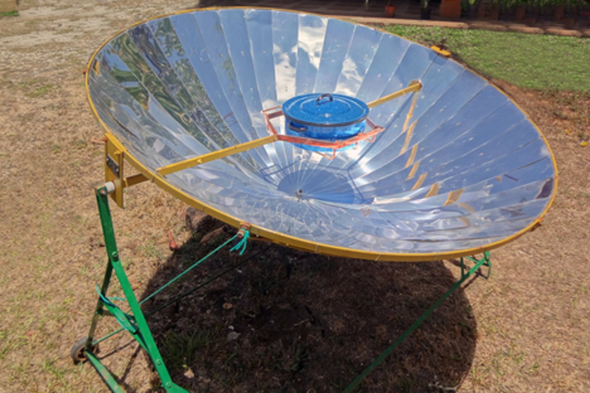

<topbar style="display:none;">
<item><a href="../index.html">Home</a></item>
<item><a href="../about.html">About</a></item>
<menu name="Updates">
<item><a href="../week-1/index.html">Week 1</a></item>
<item><a href="../week-2/index.html">Week 2</a></item>
<item><a href="../week-3/index.html">Week 3</a></item>
<item><a href="../week-4/index.html">Week 4</a></item>
<item><a href="../week-5/index.html">Week 5</a></item>
<item><a href="../week-6/index.html">Week 6</a></item>
<!-- <item><a href="#">Final Project</a></item> -->
</menu>
</topbar>
<!-- This is a comment, it is ignored by the compiler/interpreter -->
## Week 2 - Precedents, and Initial Design Idea
Mostly we built on similar precedents to those explored in week one, summarized below:
The solar oven relies on solar heating to cook food, via a large mirror:

The solar oven has the notable drawback though of only being useful during peak sunlight hours, an issue which can be resolved by using the light to heat a reservoir.
One implementation of this which has been proposed and implemented in some places is the molten salt power plant, which uses a reservoir of heated molten salt to generate power.
A combination of these two ideas is the solar water heater, which is used around the US to provide
cheap and easy heating for homes in the winter, without need for gas.
These methods of passive solar power generation can also be augmented with the addition of active photovoltaic panels which would allow any intervention to continue to operate at night.
Our initial design idea utilizes both of these ideas in one larger intervention, in the form of a pavilion, which uses a solar concentrator mounted on the roof to heat a plate of metal.
This plate of metal will then ideally be used as a grill or stove-top to cook food. To supplement the solar heater, and allow it to run at night, we also propose the addition of solar panels on the roof to charge a battery which could be used to continue heating the grill after the sun goes.
Additionally, when the grill is not in use the solar concentrator would be used to heat a reservoir of water, which could also be used to heat the grill after peak solar hours have passed.
----
Precedent websites:
* <a href="https://inhabitat.com/worlds-first-molten-salt-solar-plant-produces-power-at-night/">Molten Salt Power Plant</a>
* <a href="https://www.energy.gov/energysaver/solar-water-heaters">Solar Water Heater</a>
* <a href="https://www.energy.gov/eere/solar/photovoltaics">Photovoltaics</a>